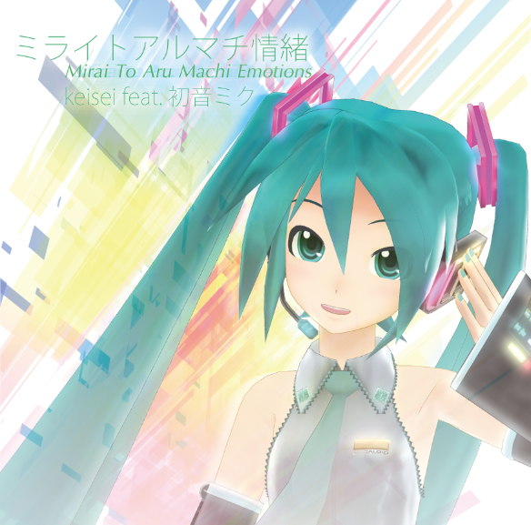

ミライトアルマチ情緒
Mirai To Aru Machi Emotions
keisei feat. Hatsune Miku 2nd Album
CD Info

- 2ndアルバム「ミライトアルマチ情緒」
- 未発表曲を2曲含む全曲リテイク（リマスタリング）音源
- 2nd Album "Mirai To Aru Machi Emotions"
- All tracks will be revised edition, including two secret tracks
Track List
01. 明日見る街
02. 桜色エレクトロ
03. yanesen
04. cloudway
05. Urban Stroke
06. IRIS SCREEN
07. ココロターミナル
08. Turbo Orbit
09. WALK AROUND STEREO
10. はるかGlider (Higher than the stars Remix) by ばらっげ
11. ココロターミナル (Sky Lounge Remix) by ばらっげ
12. 地図にない街 (haru2036 remix) by haru2036
Updates
- 2014/11/14
- サンプルCDが届いた。無事再生確認 明日はよろしくお願いします！
- 2014/10/31
- 歌詞のページ完成
- 2014/10/27
- CD入稿完了！クロスフェード音源アップ
- 2014/10/26
- 曲順決定
- 2014/09/21
- 曲順をあらかた決定
- 2014/09/09
- ページ開設 そのうちデザイン完成形に近づけていきます．
- Page is now built
- 2014/08/28
- ボーマス30申し込み完了
- Applied to THE VOC@LOiD M@STER 30
Special Thanks
- MikuMikuDance
- 樋口M
- Higuchi M
- Hatsune Miku 1052C-Re Model
- 箔鳥居
- HAKUTORY
- Remix
- ばらっげ (@UsaChan16)
Baragge
- haru2036 (@haru2036)
- 当日サークルスペース補助
Assistant
- ねぎぽよし (@CST_negi)
- Negipoyoc
このページの内容は予告なく変更される場合があります．
© 2014 keisei
{kind=link}